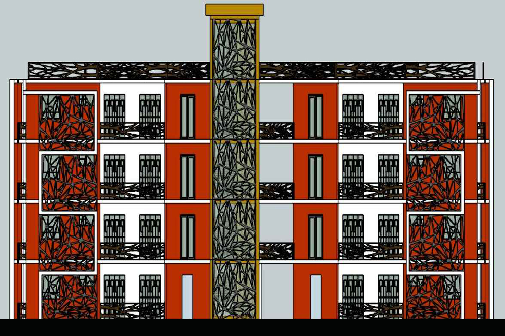
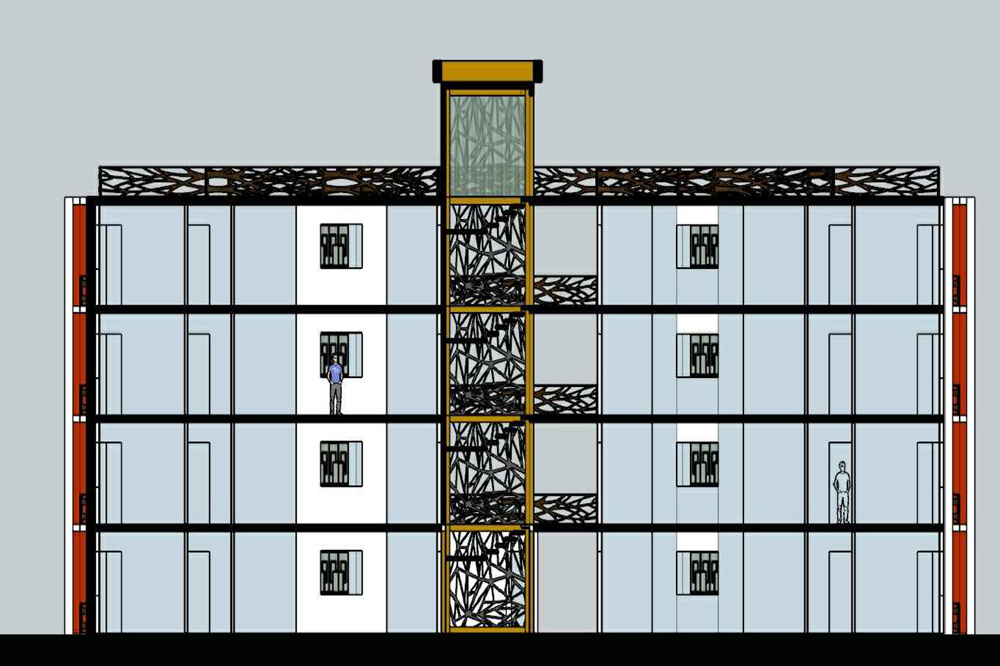
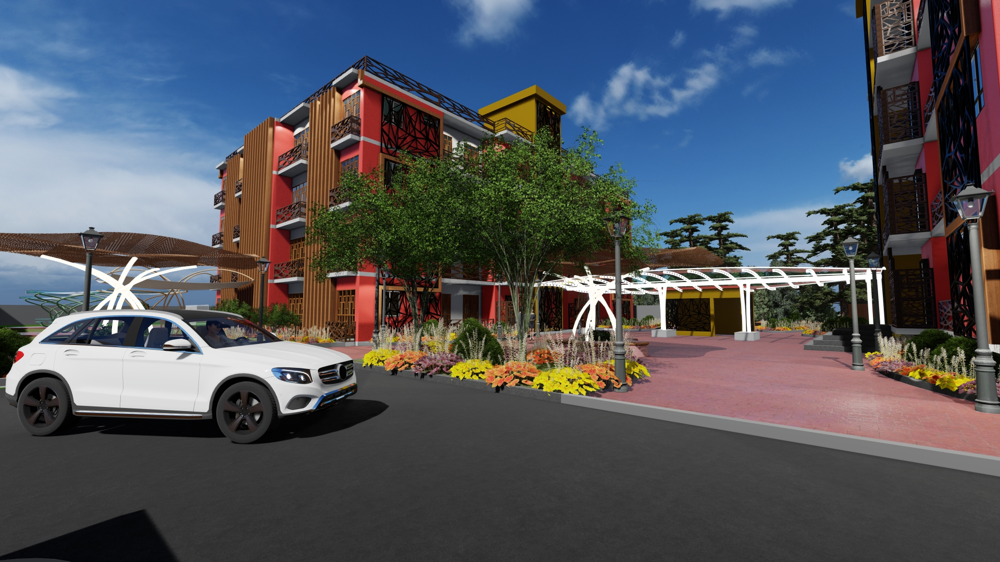
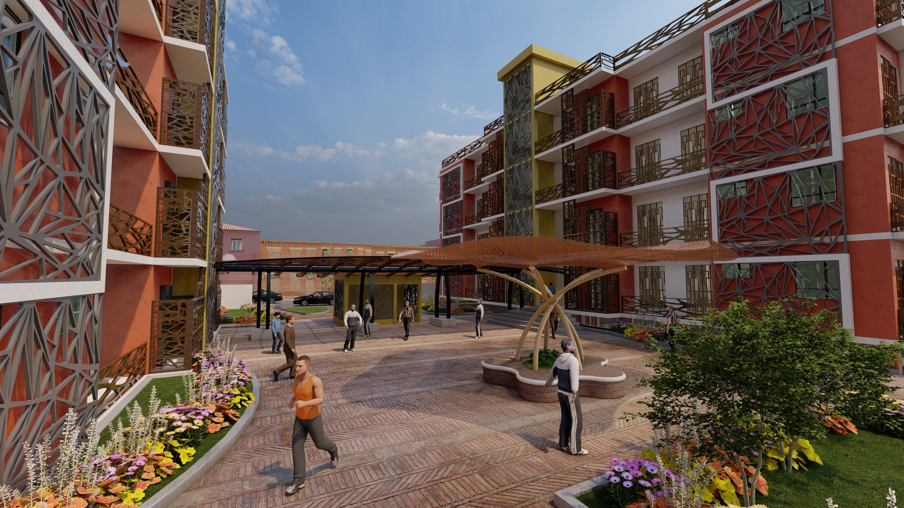
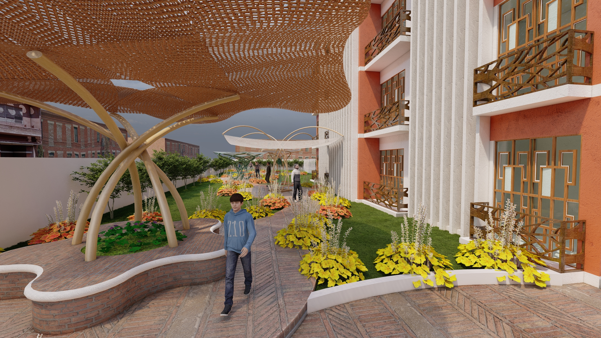
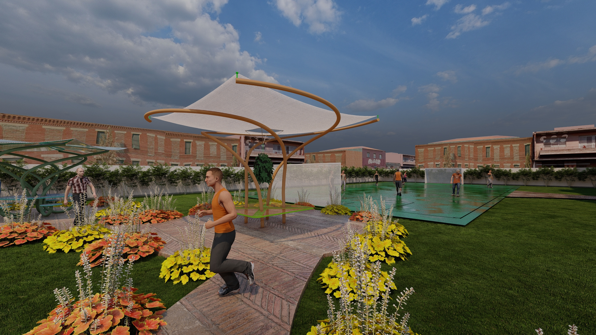

Instagram
Instagram  Facebook
Facebook Linkedin
Linkedin UMG
UMGEdificio
Multifamiliar
El proyecto se encuentra úbicado en la zona 3 en la ciudad de Guatemala, enfocada principalmente para familias de clase media media con un cierto poder adquisitivo, el complejo se compone por dos edificios de 4 niveles cono dos tipos de apartamentos de 3 y 4 habitaciones. En las areas sociales se compone por un sotano de dos niveles, ingreso principal, área deportiva y de estar para socializar.
Sistema Constructivo
1 / 2

2 / 2

❮
❯

Planta Arquitectónica
En la planta de conjunto se puede observar la cantidad de área verde estipulada por el POT (Plan de Ordenamiento Territorial).
El complejo se encuentra conformado por dos torres de apartamentos, capacidad de un parque vehícular de sesenta automóviles
distribuidos en dos sótanos, cuenta con una plaza central y un ducto que conecta ambas torres.

Planta Arquitectónica
Cada modulo de apartamentos se conforma por sala comedor cocina un baño de visitas, lavanderia con su patio para poder tender ropa, tres dormitorios entre los cuales se encuentra
el dormitorio master con su baño privado y los otros dormitorios con un baño compartido. En el primer nivel de la torre se encuentra el área administrativa con su baño privado. El
proyecto por ser enfocado en ayuda social se descartó la opción de poder incorporar un elevador por lo cuál unicamente se implentó un módulo de gradas.

Planta Arquitectónica
Conjunto
En la planta de conjunto se puede observar la cantidad de área verde estipulada por el POT (Plan de Ordenamiento Territorial).
El complejo se encuentra conformado por dos torres de apartamentos, capacidad de un parque vehícular de sesenta automóviles
distribuidos en dos sótanos, cuenta con una plaza central y un ducto que conecta ambas torres. 
Planta Arquitectónica
Torre de Apartamentos
Cada modulo de apartamentos se conforma por sala comedor cocina un baño de visitas, lavanderia con su patio para poder tender ropa, tres dormitorios entre los cuales se encuentra
el dormitorio master con su baño privado y los otros dormitorios con un baño compartido. En el primer nivel de la torre se encuentra el área administrativa con su baño privado. El
proyecto por ser enfocado en ayuda social se descartó la opción de poder incorporar un elevador por lo cuál unicamente se implentó un módulo de gradas.

Elevación Frontal
Las torres de apartamentos se encuentra conformada por 4 niveles ya que al ser de caracter social implementar un modulo de ascensores conllevaria un costo elevado por lo que en este caso unicamente se impelementaron un modulo de gradas. El modulo de gradas se encuentra en la parte central del edificio , cubriendo las áreas del nivel uno hasta la azotea. El tipo de diseño del edificio es moderno y se incorporaron una serie de celosias para poder una serie de parteluces que ayudaran a que en puntos claves del apartamento el son no entre directamente.

Corte
Através del corte se pueden observar los diferentes muros necesario para poder soportar el edificio, en este caso el tipo de sistema a implementar
será el de metal deck por lo cual entre cada uno de los niveles se está implementando losa cero ya que este tipo de construcción nos proporciona la
ventaja de tener mas luz entre las columinas tipo i y su construcción es más rapido. La division entre muros para los apartamentosse implementaron muros de
tablarock ya que estos soportan en gran cantidad los factores climáticos.
Corte
Longitudinal
Através del corte se pueden observar los diferentes muros necesario para poder soportar el edificio, en este caso el tipo de sistema a implementar
será el de metal deck por lo cual entre cada uno de los niveles se está implementando losa cero ya que este tipo de construcción nos proporciona la
ventaja de tener mas luz entre las columinas tipo i y su construcción es más rapido. La division entre muros para los apartamentosse implementaron muros de
tablarock ya que estos soportan en gran cantidad los factores climáticos.

Vista Exterior
En la vista exterior se observa el ingreso y egreso principal para que los vehículos puedan dirigirse hacía el sótano. El tipo de pavimento que se propone es de concreto ya que es
de larga durabilidad y poco mantenimiento. En las dos torres de eficios se logra apreciar los planos seriados y diferentes tipos de celosias el tipo de material utilizado en este
caso es de hierro. El tipo de muro exterior es de mamposteria utilizando block tipo A para el soporte de grandes cargas.
Vista Exterior
Ingreso Vehícular
En la vista exterior se observa el ingreso y egreso principal para que los vehículos puedan dirigirse hacía el sótano. El tipo de pavimento que se propone es de concreto ya que es
de larga durabilidad y poco mantenimiento. En las dos torres de eficios se logra apreciar los planos seriados y diferentes tipos de celosias el tipo de material utilizado en este
caso es de hierro. El tipo de muro exterior es de mamposteria utilizando block tipo A para el soporte de grandes cargas.

Vista Exterior
El tipo pavimento propuesto para esta área exterior es articulado por lo cuál se implemento ladrillo para poder darle movimiento. También se encuentran áreas de descanso
para que las personas puedan socializar y estar protegidos de la incidencia solar. Se incorporo de igual manera una estructura para interconectar las dos torres sin que
las personas se encontraran protegidas ante la lluvia y el sol.
Vista Exterior
Área Social
El tipo pavimento propuesto para esta área exterior es articulado por lo cuál se implemento ladrillo para poder darle movimiento. También se encuentran áreas de descanso
para que las personas puedan socializar y estar protegidos de la incidencia solar. Se incorporo de igual manera una estructura para interconectar las dos torres sin que
las personas se encontraran protegidas ante la lluvia y el sol.

Vista Exterior
El complejo cuenta con un caminamiento con áreas de relajamiento para que las personas puedan sentarse a platicar comadamente,
estos cuentan con un saran de un 80% de sombra compuestos por una estructura metálica, el tipo de pavimento implementado es articulado con jardineras en sus extremos.
En la parte derecha de la vista se observa la torre de apartamentos que cuentan con una salida de balcón de la sala de cada uno de los apartamentos los cuales contiene
una baranda metálica ,en muros el tipo de acabado es de repello pintado en color naranja.
Vista Exterior
Caminamiento
El complejo cuenta con un caminamiento con áreas de relajamiento para que las personas puedan sentarse a platicar comadamente,
estos cuentan con un saran de un 80% de sombra compuestos por una estructura metálica, el tipo de pavimento implementado es articulado con jardineras en sus extremos.
En la parte derecha de la vista se observa la torre de apartamentos que cuentan con una salida de balcón de la sala de cada uno de los apartamentos los cuales contiene
una baranda metálica ,en muros el tipo de acabado es de repello pintado en color naranja.

Vista Exterior
El complejo cuenta con un área deportiva recreativa que se interconecta con el caminamiento peatonal, cuenta con una cancha de papifutbol. En todo el muro perimetral del complejo cuenta con una
hilada de arboles para poder generar un filtro de aire que protegera del olor que pueda generarse por estar en cercanias con el basurero de la zona 3 de la Ciudad de Guatemala. El tipo de grama
para este sector será de tipo san agustin por su rapdio crecimiento y mantenimiento.